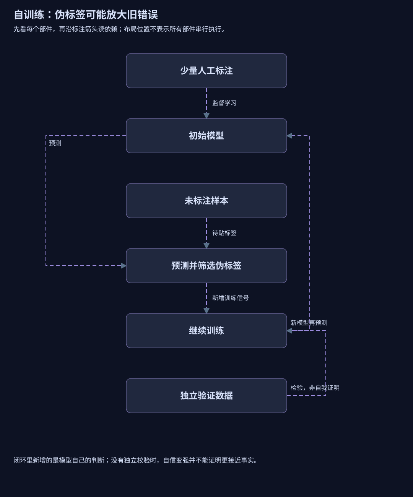

第15章 · 归纳偏置、自训练与风险
本章开篇生活情境与衔接为编辑教学改写，借鉴原视频从经历引出概念的讲解方法，不是作者原话；原视频线索与论文见下方对应段落。
先看一件具体的事
越想越确定，是因为证据变多了吗？
涨50%再跌50%，没有回原点 · 点击可放大先看这个场景
你先有了一个判断：“他大概不喜欢我。”接着去翻聊天记录，挑出几句冷淡的话，又用这些话证明最初的判断。想完一圈，你更确信了。可这一圈里，有没有真正加入新的证据？
问题出在哪里
自训练也可能走进类似的循环。模型先用少量人工标签学一些规律，再给大量未标注数据贴上伪标签，最后拿这些标签继续训练。做得好，它能利用更多数据；做得不好，它会把自己早先贴错的标签当成事实，反复强化。置信度很高，只能说明它很肯定，不能单独证明它肯定得对。
模型怎样处理
即使没有自训练，模型也不能只靠几个已知点唯一确定整条曲线。穿过同样几个点，可以有许多种外推。模型结构、正则化和训练方式提供了一些偏好，帮助它选择怎样的规律，这叫归纳偏置。它是学习得以推广的条件之一，也可能让模型在新场景里选错线索。
再看一个变化
再加上时间，另一个误解会出现：每次看起来平均赚一点，是不是长期就安全？拿100作为起点，先涨50%变150，再跌50%变75。一次加、一次减并不会抵消。连续乘法的路径，和把每次收益简单取平均，不是一回事。
放回完整流程
如果过程规定资金归零或低于某个门槛就退出，那么退出可以成为吸收态：后面再好的机会，也无法在这个过程里继续参与。纯粹把正数反复乘以正比例，有限步并不自动精确等于零，必须分清数学乘法和实际退出规则。
回到开头
把这一章连起来：判断需要外部校验，推广依赖假设，长期过程还要看路径和退出条件。下面的技术段会分别展开。生活类比让这些问题容易记住，却不能替代对具体模型或现实决策的证据检查。
这一章怎么读先带着上面的问题往下看。每个概念先用白话接上情境，再给计算；遇到公式可以先看旁边的例子。动手实验和答案直接展开，论文留在相应概念后，想追根究底时再点开。
先动手试一试 → 15.1 带着问题进入模型
模型不是把数据原样背下就完成学习：它要依赖假设做外推，也可能用自己的输出继续训练；运行过程还可能受路径和退出条件限制。
先沿箭头看懂：自训练：伪标签可能放大旧错误

闭环里新增的是模型自己的判断；没有独立校验时，自信变强并不能证明更接近事实。15.2 自训练、伪标签与确认偏误
先把机器自己贴的标签涂一种颜色，人工核验的标签涂另一种。下面每走一轮都问：这次新增的究竟是独立证据，还是旧判断的又一次回声？
先用少量标注数据训练，再给未标注样本生成伪标签，选择部分伪标签继续训练。这能利用额外数据，也可能把早期错误放大。
把刚才的直觉一步步算出来
先用少量标注数据训练，再给未标注样本生成伪标签，选择部分伪标签继续训练。这能利用额外数据，也可能把早期错误放大。
置信度阈值不等于准确率保证，尤其当模型概率未校准或输入分布变化时。可以通过独立验证、增强一致性、教师集成等减少风险，但需实测。
换你试一次：先猜，再算
100条伪标签里模型宣称都超过0.9置信度；人工检查发现20条错误。能说“只用高置信度就可靠”吗？
参考答案与计算结果
不能。该样本上实际准确率80%，与声称置信度存在差距；还要分桶和用更大独立样本检查校准。
这个类比帮到哪里，停在哪里
人的确认偏误是类比，不能由自训练实验直接证明某个舆论事件的真相。
关联视频 · 已取得完整音轨并完成本机自动转写；本节综合转写与页面摘要改写，术语和个别片段尚未逐秒校对。
15.3 吸收态与乘法过程
先用100走两步乘法，再谈长期平均。如果过程还有退出线，就把它明确写出来。否则把“越来越小”和“已进入不能退出的状态”混在一起，结论会变。
吸收态是进入后在给定转移规则下无法离开的状态。例如固定规则中的“余额归零且不能追加资金”。要明确规则，不能把现实中所有失败都视为数学上的吸收态。
把刚才的直觉一步步算出来
吸收态是进入后在给定转移规则下无法离开的状态。例如固定规则中的“余额归零且不能追加资金”。要明确规则，不能把现实中所有失败都视为数学上的吸收态。
乘法财富过程要区分单步算术期望与长期增长率。不同轨迹的平均值不能自动代表一个人沿时间经历的增长。这里仅讨论概率模型，不构成投资建议。
原视频自己明确区分了两件事：纯乘法在有限步内不一定精确达到零；加入资金下限或保证金退出规则后，才有不可继续参与的吸收状态。应保留这个限定，不能用“数学上乘不成零”误判作者没有说明边界。基金人物的实时报道细节仍未核实，不作为学习依据。
换你试一次：先猜，再算
独立公平硬币：正面资金×1.5，反面×0.6。单步期望乘数是多少？一正一反后的乘数是多少？
参考答案与计算结果
单步算术期望1.05；一正一反相乘0.9。正的单步期望不保证每条路径增长。此例不意味着每条路径必然破产。
这个类比帮到哪里，停在哪里
页面提及的基金与人物故事未经独立核实，不作为本稿证据。
关联视频 · 已取得完整音轨并完成本机自动转写；本节综合转写与页面摘要改写，术语和个别片段尚未逐秒校对。
15.4 归纳偏置：模型靠哪些假设推广
几个点能画出许多条曲线，模型必须偏向某些延伸方式才能做预测。下面看结构和学习规则提供了什么假设，以及这些假设在换场景时是否还合适。
学习器通过结构、优化方法和数据等引入偏好，帮助从有限样本推广到未见样本。归纳偏置不是一个只有坏处的词。
把刚才的直觉一步步算出来
学习器通过结构、优化方法和数据等引入偏好，帮助从有限样本推广到未见样本。归纳偏置不是一个只有坏处的词。
在LLM主线之后阅读，用于练习区分概率、学习目标和行为结果。
以穿过少量已知点的多条曲线说明数据不足以唯一确定外推，学习器需要归纳偏置。随后用纹理与形状冲突的图像例子讨论不同模型依赖不同特征，最后转向有限人际信号如何被既有经验解释。
换你试一次：先猜，再算
模型A假设规律是直线，B可拟合高阶曲线。小样本时两者会怎样不同？
参考答案与计算结果
A限制更强，可能欠拟合也可能更稳健；B表达力更大，也更可能拟合噪声。需通过验证数据比较。
这个类比帮到哪里，停在哪里
人的偏见与统计学习中的归纳偏置不是同一个定义；视频的心理解释不是实验结论。
关联视频 · 已取得完整音轨并完成本机自动转写；本节综合转写与页面摘要改写，术语和个别片段尚未逐秒校对。
本章交互实验
想亲手复现，就运行这段小实验
本例是编辑编写的教学计算，不是作者实验的代码复刻。先把 common.py 与本章脚本下载到同一个目录，再执行 python3 15_bias_risk.py。只使用Python标准库。
import math
up,down=1.5,.6
arithmetic=(up+down)/2
log_growth=(math.log(up)+math.log(down))/2
print('expected one-step multiplier:',arithmetic)
print('one-up-one-down multiplier:',up*down)
print('expected log growth:',round(log_growth,6))
assert arithmetic>1 and log_growth<0
# Two functions match the same two observations but extrapolate differently.
for x in [0,1,2]:
linear=x; alternative=x+2*x*(x-1)
print('x:',x,'f:',linear,'g:',alternative)
实际运行输出
expected one-step multiplier: 1.05
one-up-one-down multiplier: 0.8999999999999999
expected log growth: -0.05268
x: 0 f: 0 g: 0
x: 1 f: 1 g: 1
x: 2 f: 2 g: 6
先不急着读完每一行代码。找到输入、这次改变的量和最后输出，按上面的例子预测一次，再运行核对。若结果和直觉不同，打印中间值，看看差异从哪一步开始。
回到开头，你能解释了吗？
模型反复用自己的伪标签训练，为什么可能更自信却没有更正确？
100先涨50%再跌50%，为什么没有回到100？吸收态还需要什么规则？
用自己的话讲给一个没读过这一章的人听。能把问题、过程和结果接起来，再看公式就会容易一些。